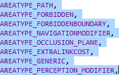
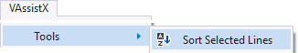
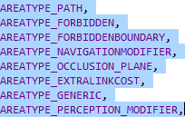
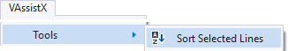

Sort Lines
Sort lines in your code by first selecting them,

and then choosing Sort Selected Lines in the menubar (Alt+X, T, S).

Learn more.
Sort lines in your code by first selecting them,

and then choosing Sort Selected Lines in the menubar (Alt+X, T, S).

Learn more.